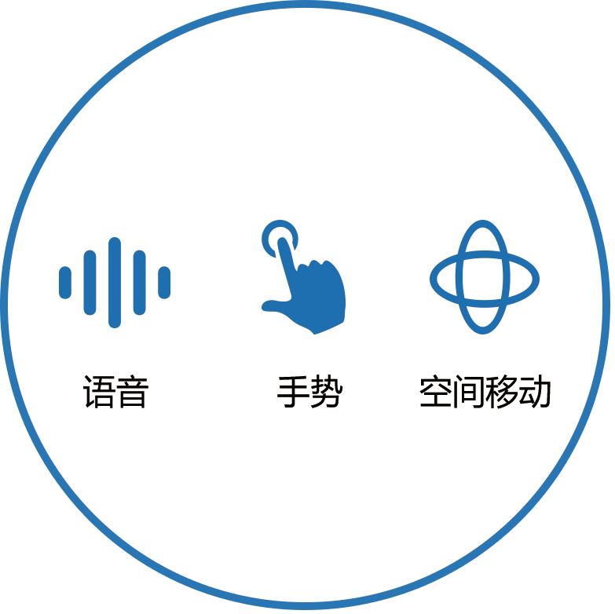
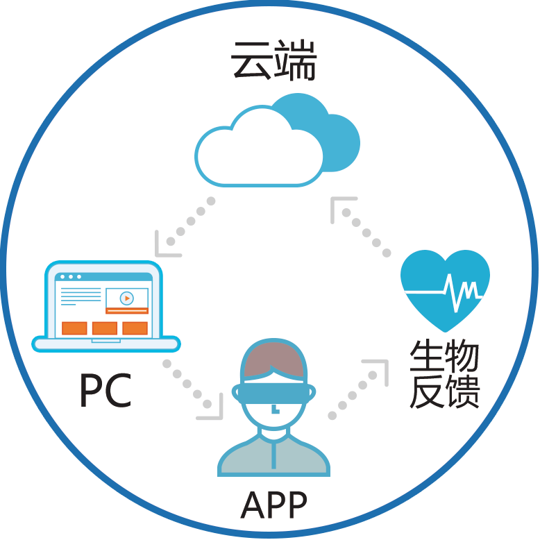
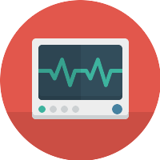
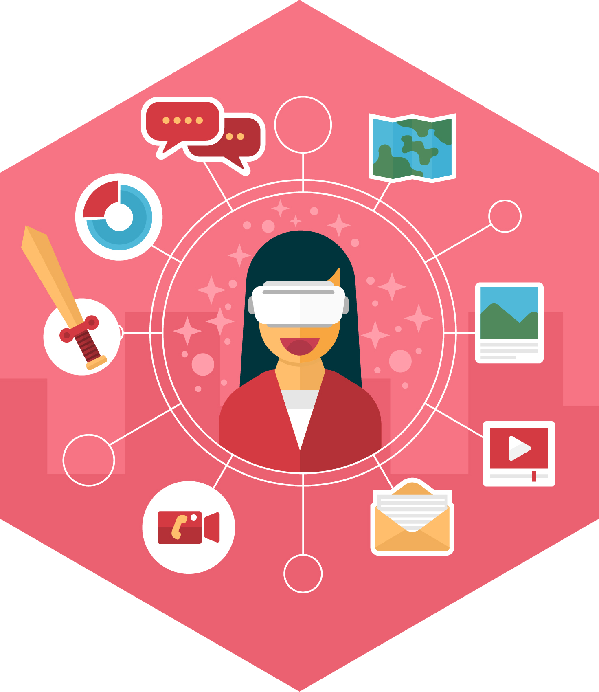
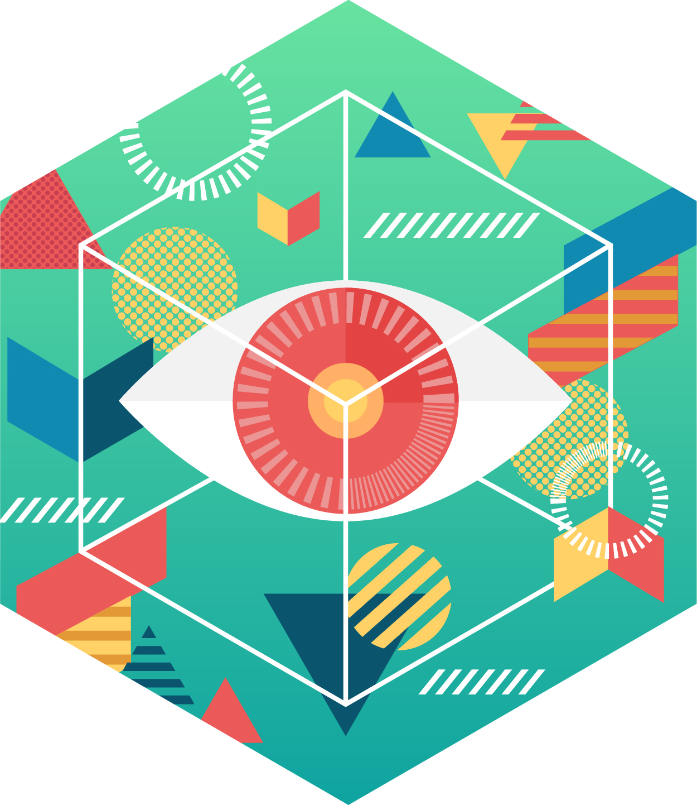

阿呆科技致力于通过VR/AR等智能交互技术，探索人类心理活动，帮助人们更好地认知自己和提升自己。
- OTO心理产品 -
-
用户体验过程
以放松场景为例，带上VR头盔，一秒钟便可切换场景，置身于宇宙、竹林、海边等优美环境。耳边随场景变化，听到风吹竹林的沙沙声、浪拍沙滩的声音等。在画外音的引导下，体会渐进式肌肉放松过程。
-
人机交互方式
用户生物电指数将被收集、分析，提供给医生，以客观数据作为主观报告的参考项。用户可与VR头盔进行手势交互，下达声音指令。用户可在安全空间内进行空间定位移动，以适合不同的治疗场景。
-
操控平台
OTO心理产品针对不同的使用对象设计了不同的操作平台。医生有APP专业端，对用户在VR头盔中体验的内容做控制。用户有APP客户端，使用配套的课程完成门诊/咨询后的课后作业。
- 进入虚拟现实场景 -
OTO心理产品矩阵适用于焦虑症、抑郁症、自闭症、PTSD、ADHD等心理疾病治疗，也涵盖自我放松、情绪管理、注意力训练等心理提升模块，可随需搭配，实现方案定制化。多种多样的VR情境能够匹配各种需求。
- 人机交互方式 -
-
智能交互
用户通过语音识别、手势识别、空间移动等多种方式与VR环境进行交互
-
大数据平台
用户的生物反馈数据将被传送到云端平台上，个人用户能够观看查询，也可供专业人员分析
- 操控平台 -
-
定制化课程安排
根据医生建议及个性化调整，设置符合自身的治疗日程。
-
生物反馈追踪
采集并分析皮肤电、心跳数据，以客观数据补充主观感受与判断。
 -
医师专用界面
可控制VR场景变量，监控生物反馈，辅助咨询和治疗。
- OTO心理产品疗效研究 -
VR疗法有助于缓解社交焦虑个体的焦虑症状
通过重复测量方差分析考察被试暴露前后在社交焦虑量表（Social Interaction Anxiety Scale，SIAS）上得分的差异。结果显示，时间和分组的交互作用显著，F（1,50）=9.229, p=.004, 偏Eta方=0.156。时间的主效应显著，F（1,50）=7.489, p=.009, 偏Eta方=0.130。分组的主效应显著，F（1,50）=32.771, p<.001, 偏Eta方=0.396。事后检验结果显示，对于社交焦虑组被试，暴露后SIAS问卷得分（M=58.42, SD=14.873）显著低于前测时的SIAS问卷得分（M=67.27, SD=15.106），t(25)=3.680, p=.001, Cohen’s d=1.472。对于非社交焦虑组被试，暴露后的SIAS问卷得分（M=41.12,SD=15.706）与前测时（M=40.65,SD=13.830）无显著差异，t(25)=-.243, p=.810, Cohen’s d=0.097。
VR疗法有助于缓解社交焦虑个体的焦虑症状
通过重复测量方差分析考察被试暴露前后在社交焦虑量表（Social Interaction Anxiety Scale，SIAS）上得分的差异。结果显示，时间和分组的交互作用显著，F（1,50）=9.229, p=.004, 偏Eta方=0.156。时间的主效应显著，F（1,50）=7.489, p=.009, 偏Eta方=0.130。分组的主效应显著，F（1,50）=32.771, p<.001, 偏Eta方=0.396。事后检验结果显示，对于社交焦虑组被试，暴露后SIAS问卷得分（M=58.42, SD=14.873）显著低于前测时的SIAS问卷得分（M=67.27, SD=15.106），t(25)=3.680, p=.001, Cohen’s d=1.472。对于非社交焦虑组被试，暴露后的SIAS问卷得分（M=41.12,SD=15.706）与前测时（M=40.65,SD=13.830）无显著差异，t(25)=-.243, p=.810, Cohen’s d=0.097。
-

业务
对传统心理咨询、治疗方案，加入科技化升级，以VR（Virtual Reality）/ AR（Augmented Reality）的呈现方式，提供模拟真实的沉浸感环境，匹配精确算法、生物反馈监控、智能互动手段，对传统干预手段中难以呈现的部分提供创新的解决方案。并且，通过VR/AR进行情绪管理、认知训练、社交训练等，帮助人们提升能力，改善心理健康。
-

团队
阿呆科技团队来自北京大学心理与认知科学学院和领先互联网科技公司。OTO心理产品由多名心理学博士和来自北京大学、首都医科大学、北医六院、安定医院的专家合作研发；核心团队曾共同创立中国领先虚拟现实科技公司，在VR行业具有顶级内容制作能力，共同取得过诸多行业第一。团队骨干均来自于腾讯、阿里、乐视、凤凰等公司。
公司地址：北京市朝阳区八里庄西里98号住邦2000-3号楼 M3层，3A02
商务合作：bd@adai-tech.com
产品咨询：oto@adai-tech.com
简历投递：hr@adai-tech.com
联系电话：010-85795371
-
关注OTO心理
-
公司官网